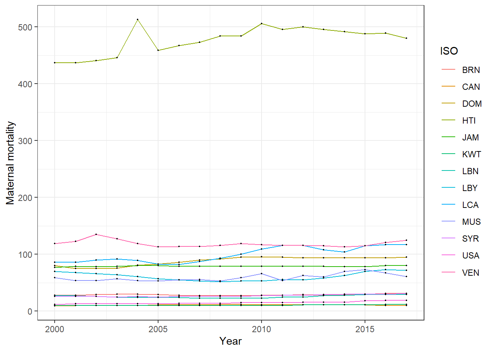

finaldata <- read.csv(here("data", "finaldata.csv"), header = TRUE)
#glimpse(finaldata)Week6
Reading in Final Data Set
Filter to baseline year 2000, and construct Summary Table
finaldata_baseline <- filter(finaldata, year == 2000) %>%
mutate(country_name = as.factor(country_name),
armconf1 = factor(armconf1, levels = c(0,1), labels=c("No","Yes")),
earthquake = factor(earthquake, levels = c(0,1), labels=c("No","Yes")),
drought = factor(drought, levels = c(0,1), labels=c("No","Yes"))
)
glimpse(finaldata_baseline)Rows: 186
Columns: 20
$ country_name <fct> Afghanistan, Albania, Algeria, Andorra, Angola, Anti…
$ ISO <chr> "AFG", "ALB", "DZA", "AND", "AGO", "ATG", "ARG", "AR…
$ region <chr> "Southern Asia", "Southern Europe", "Northern Africa…
$ year <int> 2000, 2000, 2000, 2000, 2000, 2000, 2000, 2000, 2000…
$ GDP <dbl> NA, 1126.6833, 1780.3759, 21620.4850, 556.8842, 1101…
$ OECD <int> 0, 0, 0, 0, 0, 0, 0, 0, 1, 1, 0, 0, 0, 0, 0, 1, 0, 0…
$ OECD2023 <int> 0, 0, 0, 0, 0, 0, 0, 0, 1, 1, 0, 0, 0, 0, 0, 1, 0, 0…
$ popdens <dbl> 14.136539, 33.083680, 27.912075, 29.119765, 1.769693…
$ urban <dbl> 16.2532406, 27.3883597, 36.1909049, 41.8537452, 31.0…
$ agedep <dbl> 108.34663, 59.65730, 61.50088, 38.87967, 95.57541, 5…
$ male_edu <dbl> 2.762086, 8.961755, 4.498256, 11.679305, 4.420013, 8…
$ temp <dbl> 12.699593, 13.739201, 17.481728, 9.557965, 21.335268…
$ totdeath <int> 5065, 6, 1168, 0, 2666, 0, 0, 0, 0, 0, 18, 0, 14, 0,…
$ armconf1 <fct> Yes, No, Yes, No, Yes, No, No, No, No, No, No, No, N…
$ infantmortality <dbl> 90.5, 24.1, 33.9, 7.3, 121.5, 12.6, 17.5, 27.0, 5.1,…
$ maternalmortality <int> 1450, 23, 161, NA, 827, 44, 66, 43, 7, 6, 47, 27, 43…
$ neonatalmortality <dbl> 60.9, 12.1, 21.1, 3.8, 50.3, 9.7, 11.0, 16.1, 3.5, 3…
$ under5mortality <dbl> 129.2, 27.2, 39.7, 8.2, 204.4, 15.5, 19.6, 30.6, 6.2…
$ drought <fct> Yes, No, No, No, No, No, No, Yes, No, No, Yes, No, N…
$ earthquake <fct> No, No, No, No, No, No, No, No, No, No, Yes, No, Yes…label(finaldata_baseline$armconf1) <- "Armed Conflict"
label(finaldata_baseline$country_name) <- "Country"
label(finaldata_baseline$year) <- "Year"
label(finaldata_baseline$maternalmortality) <- "Maternal Mortality Rate per 100,000 live births"
label(finaldata_baseline$infantmortality) <- "Infant Mortality Rate per 1,000 live births"
label(finaldata_baseline$neonatalmortality) <- "Neonatal Mortality Rate per 1,000 live births"
label(finaldata_baseline$under5mortality) <- "Under 5 Mortality Rate per 1,000 live births"
label(finaldata_baseline$GDP) <- "Gross Domestic Product (GDP)"
label(finaldata_baseline$OECD) <- "OECD Member"
label(finaldata_baseline$popdens)<- "Population Density"
label(finaldata_baseline$urban) <- "Urban Residence"
label(finaldata_baseline$agedep) <- "Age Dependency Ratio"
label(finaldata_baseline$male_edu) <- "Male Education"
label(finaldata_baseline$temp) <- "Temperature"
label(finaldata_baseline$earthquake) <- "Earthquakes"
label(finaldata_baseline$drought) <- "Droughts"
caption <- "Table 1: Description of Data Used in the Study"
rndr <- function(x, name, ...) {
if (!is.numeric(x)) return(render.categorical.default(x))
what <- switch(name,
maternalmortality = "Median [Min, Max]",
infantmortality= "Median [Min, Max]",
neonatalmortality= "Median [Min, Max]",
under5mortality= "Median [Min, Max]",
GDP = "Median [Min, Max]",
popdens = "Median [Min, Max]" ,
urban = "Median [Min, Max]",
agedep = "Median [Min, Max]",
male_edu = "Median [Min, Max]",
temp = "Median [Min, Max]",
totdeath = "Median [Min, Max]")
parse.abbrev.render.code(c("", what))(x)
}
table1( ~ maternalmortality + infantmortality + neonatalmortality + under5mortality + GDP + popdens + urban + agedep + male_edu + temp +drought +earthquake| armconf1, data = finaldata_baseline,
#render = rndr,
caption = caption,
render.continuous=c("Median [Min, Max]"))| No (N=147) |
Yes (N=39) |
Overall (N=186) |
|
|---|---|---|---|
| Maternal Mortality Rate per 100,000 live births | 57.0 [3.00, 1730] | 553 [13.0, 2480] | 77.0 [3.00, 2480] |
| Missing | 3 (2.0%) | 0 (0%) | 3 (1.6%) |
| Infant Mortality Rate per 1,000 live births | 21.0 [3.00, 112] | 66.7 [10.9, 138] | 27.4 [3.00, 138] |
| Missing | 1 (0.7%) | 0 (0%) | 1 (0.5%) |
| Neonatal Mortality Rate per 1,000 live births | 12.9 [1.60, 56.0] | 36.6 [7.80, 60.9] | 16.8 [1.60, 60.9] |
| Missing | 1 (0.7%) | 0 (0%) | 1 (0.5%) |
| Under 5 Mortality Rate per 1,000 live births | 24.8 [3.90, 225] | 98.5 [12.6, 225] | 31.5 [3.90, 225] |
| Missing | 1 (0.7%) | 0 (0%) | 1 (0.5%) |
| Gross Domestic Product (GDP) | 2190 [137, 48700] | 558 [123, 4800] | 1770 [123, 48700] |
| Missing | 3 (2.0%) | 2 (5.1%) | 5 (2.7%) |
| Population Density | 27.3 [0, 99.8] | 21.3 [0, 71.7] | 25.4 [0, 99.8] |
| Missing | 1 (0.7%) | 0 (0%) | 1 (0.5%) |
| Urban Residence | 28.9 [0.106, 91.6] | 24.1 [3.80, 49.3] | 28.0 [0.106, 91.6] |
| Missing | 1 (0.7%) | 0 (0%) | 1 (0.5%) |
| Age Dependency Ratio | 60.2 [30.0, 108] | 84.4 [44.2, 111] | 63.5 [30.0, 111] |
| Male Education | 7.91 [1.07, 14.0] | 4.94 [1.69, 11.8] | 7.14 [1.07, 14.0] |
| Missing | 1 (0.7%) | 0 (0%) | 1 (0.5%) |
| Temperature | 21.0 [-1.21, 28.6] | 24.0 [5.09, 28.5] | 21.4 [-1.21, 28.6] |
| Missing | 1 (0.7%) | 0 (0%) | 1 (0.5%) |
| Droughts | |||
| No | 128 (87.1%) | 36 (92.3%) | 164 (88.2%) |
| Yes | 19 (12.9%) | 3 (7.7%) | 22 (11.8%) |
| Earthquakes | |||
| No | 134 (91.2%) | 34 (87.2%) | 168 (90.3%) |
| Yes | 13 (8.8%) | 5 (12.8%) | 18 (9.7%) |
Selecting countries with increased matmor
finaldata <- read.csv(here("data", "finaldata.csv"), header = TRUE)
finaldata |>
dplyr::select(country_name, ISO, year, maternalmortality) |>
dplyr::filter(year < 2018) |>
arrange(ISO, year) |>
group_by(ISO) |>
mutate(diffmatmor = maternalmortality - maternalmortality[1L]) |>
filter(diffmatmor > 0 & year==2017) |>
select(ISO) # A tibble: 13 × 1
# Groups: ISO [13]
ISO
<chr>
1 BRN
2 CAN
3 DOM
4 HTI
5 JAM
6 KWT
7 LBN
8 LBY
9 LCA
10 MUS
11 SYR
12 USA
13 VEN finaldata <- read.csv(here("data", "finaldata.csv"), header = TRUE)
finaldata_increased_matmor <- dplyr::filter(finaldata, (ISO == "BRN" | ISO == "CAN" | ISO == "DOM" |ISO == "HTI" |ISO == "JAM" |ISO == "KWT" |ISO == "LBN" |ISO == "LBY" |ISO == "LCA" | ISO == "MUS" |ISO == "SYR" |ISO == "USA" |ISO == "VEN")& year < 2018)Plotting
finaldata_increased_matmor |>
ggplot(aes(x = year, y = maternalmortality, group = ISO)) +
geom_line(aes(color=ISO)) + geom_point(size=0.3)+
xlim(c(2000,2017)) +
labs(y = "Maternal mortality", x = "Year") +
theme_bw()